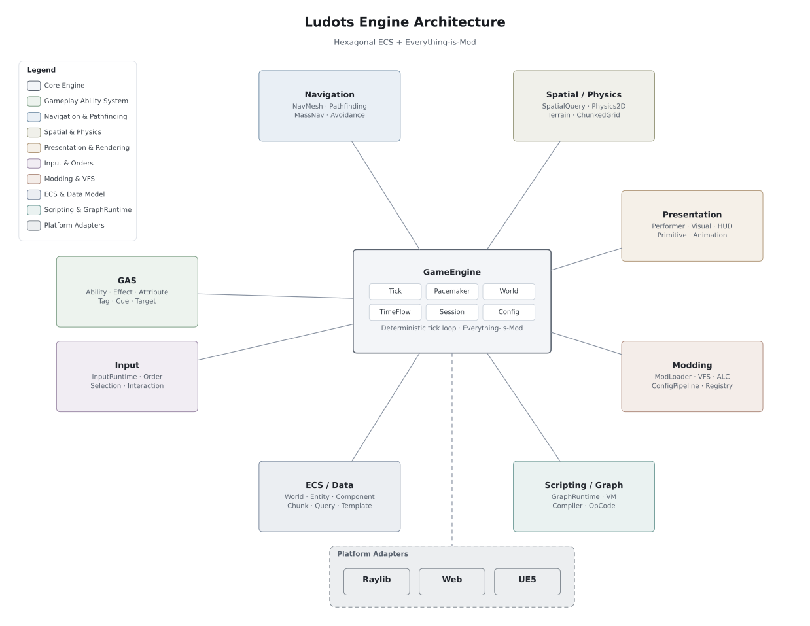

文档加载中…
C# GAME ENGINE · MOD FRAMEWORK
Ludots：基于 Arch ECS 的
高性能 C# 游戏引擎与 Mod 框架
六边形架构让 gameplay 逻辑可以完全无头测试；「一切皆 Mod」让功能通过 Registry、Pipeline 与 SystemGroup 挂靠扩展。本门户是文档、Showcase、测试验收与架构图的唯一入口。
1
安装 .NET SDK
需要 .NET 8.0、9.0 与 10.0 preview SDK（缺少任一必需 SDK 会导致 restore 或 launcher 构建失败），另需 Node.js + npm。
dotnet --list-sdks
2
克隆仓库
完整克隆即可获得引擎源码、全部 Mod 与文档写作源。
git clone https://github.com/mightybubble/ludots.git
3
启动一个 Showcase
用统一 launcher 在 Raylib 适配器上启动相机验收场景——一次点击、一次生成、一次提示，全链路确定性回放。
scripts/run-mod-launcher.cmd cli launch camera_acceptance --adapter raylib
PORTAL
从这里进入
门户的四个主区域：正式文档、Showcase 画廊、测试与验收证据、架构图库。
ARCHITECTURE AT A GLANCE
一图看懂 Ludots
以 GameEngine 为核心的整体引擎架构：8 大子系统放射状展开，平台适配器隔离在六边形边界之外。 更多图纸见 架构图库。
整体引擎架构
docs/diagrams/engine-architecture.svg
BY THE NUMBERS
项目关键数字
70
篇正式文档
gitbook/ 写作源 · 本门户为唯一对外发布面
134
个注册 Showcase
showcase.registry.json · T1–T4 分层治理
2765
个 NUnit 测试
13 个测试项目 · L0–L5 分层
114
张架构图
57 组图纸 × SVG/PNG 双格式
DOCUMENTATION
正式文档
内容由 gitbook/ 写作源驱动，目录树由构建脚本解析 gitbook/SUMMARY.md 生成。
当 gitbook 与仓库内其他材料冲突时，以 gitbook 为准。